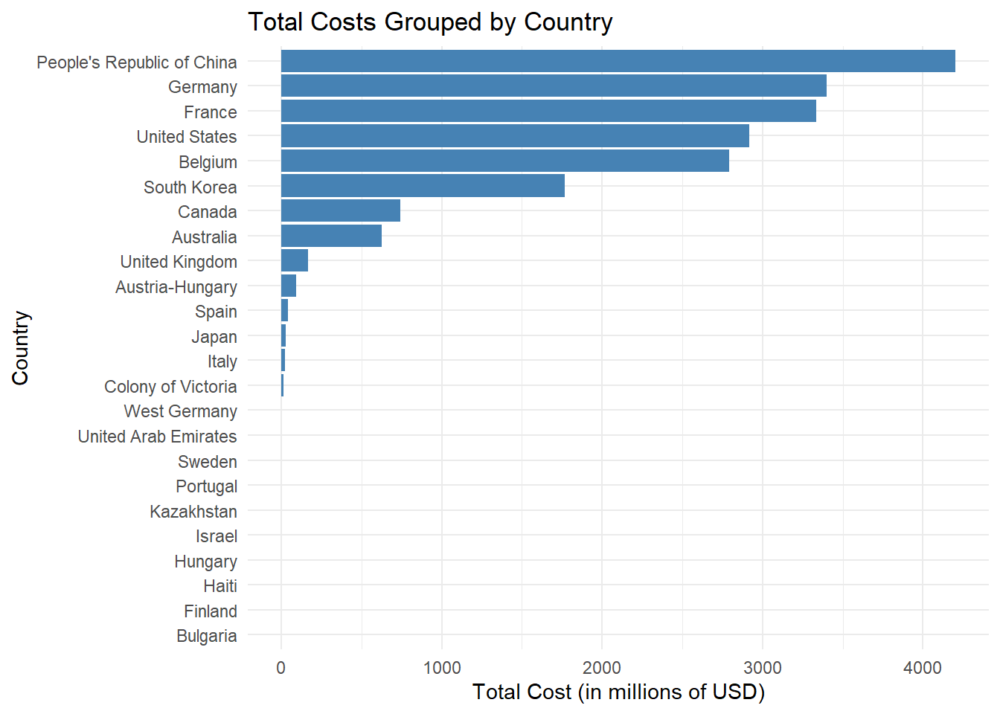
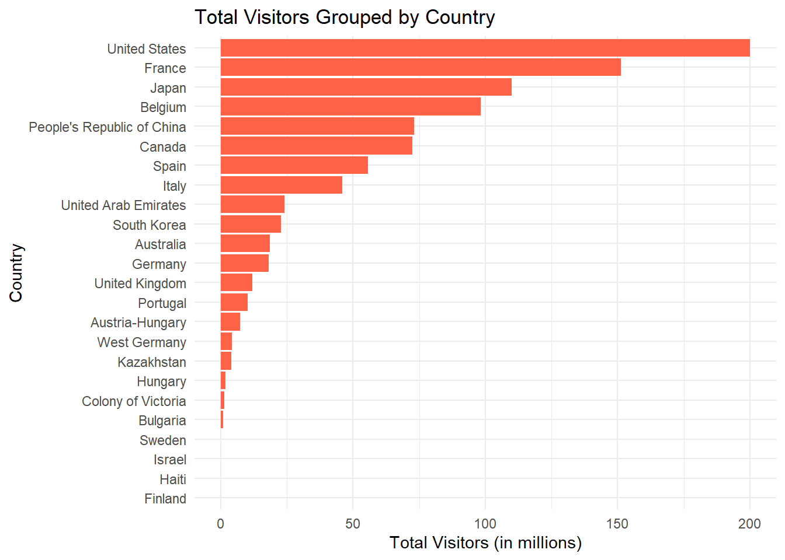
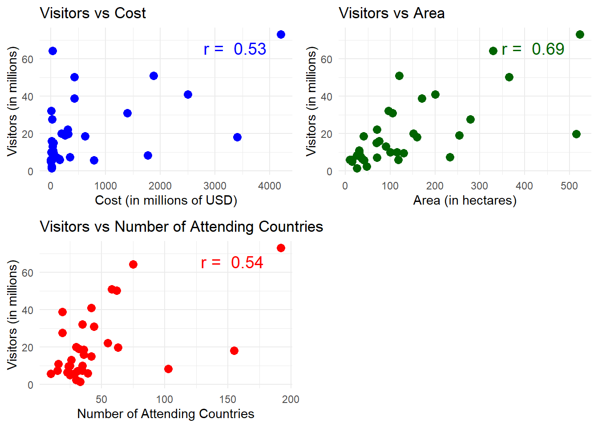
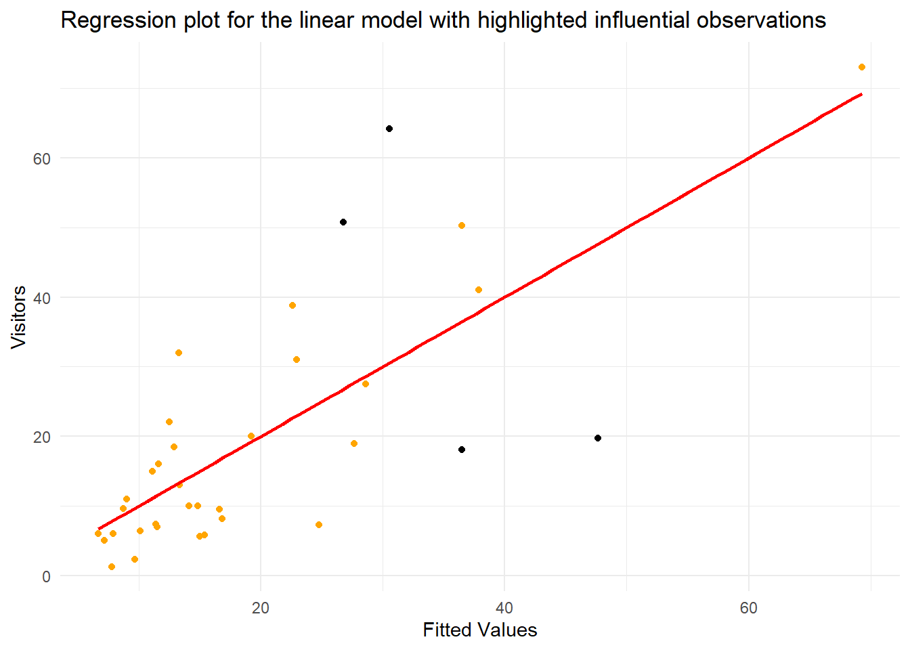
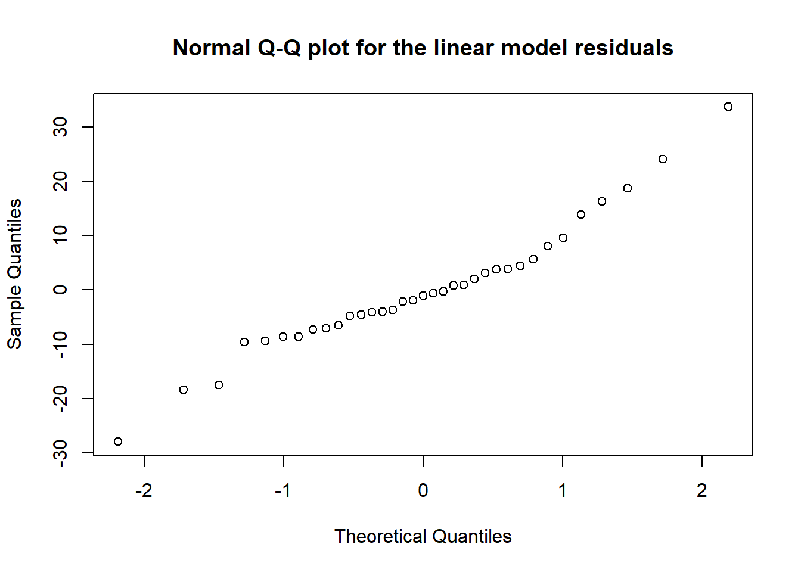
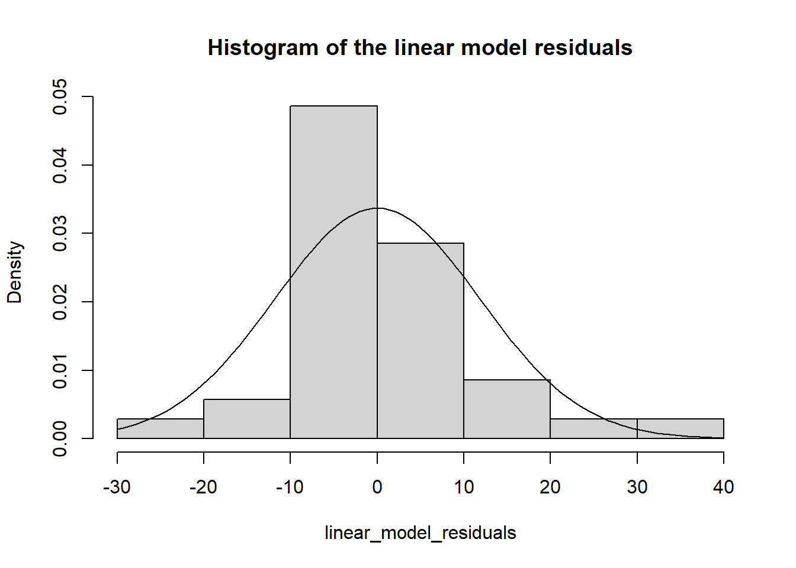

# Importing libraries
library(tidyverse)
library(skimr)
library(lmtest)
library(broom)
library(car)
library(sandwich)
library(gridExtra)
library(lm.beta)Analysis of World Fairs: Visitor Count Predictions
# Reading the data
data_raw <- read_csv("https://raw.githubusercontent.com/rfordatascience/tidytuesday/refs/heads/main/data/2024/2024-08-13/worlds_fairs.csv")Data Overview
# View the first few rows of the raw dataset
head(data_raw)# A tibble: 6 × 14
start_month start_year end_month end_year name_of_exposition country city
<dbl> <dbl> <dbl> <dbl> <chr> <chr> <chr>
1 4 1851 10 1851 The Great Exhibition United… Lond…
2 5 1855 11 1855 Exposition Universell… France Paris
3 5 1862 11 1862 International Exhibit… United… Lond…
4 4 1867 11 1867 Exposition Universell… France Paris
5 5 1873 10 1873 Weltausstellung 1873 … Austri… Vien…
6 5 1876 11 1876 Centennial Exposition United… Phil…
# ℹ 7 more variables: category <chr>, theme <chr>, notables <chr>,
# visitors <dbl>, cost <dbl>, area <dbl>, attending_countries <dbl># Summary of the raw dataset
summary(data_raw) start_month start_year end_month end_year
Min. : 2.000 Min. :1851 Min. : 1.000 Min. :1851
1st Qu.: 4.000 1st Qu.:1912 1st Qu.: 9.000 1st Qu.:1912
Median : 5.000 Median :1954 Median :10.000 Median :1954
Mean : 5.414 Mean :1947 Mean : 9.157 Mean :1947
3rd Qu.: 6.000 3rd Qu.:1984 3rd Qu.:11.000 3rd Qu.:1984
Max. :12.000 Max. :2021 Max. :12.000 Max. :2022
name_of_exposition country city category
Length:70 Length:70 Length:70 Length:70
Class :character Class :character Class :character Class :character
Mode :character Mode :character Mode :character Mode :character
theme notables visitors cost
Length:70 Length:70 Min. : 0.800 Min. : 2.00
Class :character Class :character 1st Qu.: 5.638 1st Qu.: 26.75
Mode :character Mode :character Median :10.000 Median : 125.50
Mean :16.640 Mean : 559.94
3rd Qu.:21.635 3rd Qu.: 448.25
Max. :73.080 Max. :4200.00
NA's :14 NA's :34
area attending_countries
Min. : 0.08 Min. : 8.00
1st Qu.: 30.00 1st Qu.: 23.00
Median : 70.00 Median : 33.00
Mean :105.82 Mean : 49.22
3rd Qu.:120.00 3rd Qu.: 55.00
Max. :523.00 Max. :192.00
NA's :5 NA's :5 skim(data_raw)| Name | data_raw |
| Number of rows | 70 |
| Number of columns | 14 |
| _______________________ | |
| Column type frequency: | |
| character | 6 |
| numeric | 8 |
| ________________________ | |
| Group variables | None |
Variable type: character
| skim_variable | n_missing | complete_rate | min | max | empty | n_unique | whitespace |
|---|---|---|---|---|---|---|---|
| name_of_exposition | 0 | 1.00 | 5 | 101 | 0 | 67 | 0 |
| country | 0 | 1.00 | 5 | 26 | 0 | 24 | 0 |
| city | 0 | 1.00 | 4 | 14 | 0 | 51 | 0 |
| category | 0 | 1.00 | 10 | 16 | 0 | 2 | 0 |
| theme | 0 | 1.00 | 5 | 77 | 0 | 68 | 0 |
| notables | 11 | 0.84 | 3 | 83 | 0 | 58 | 0 |
Variable type: numeric
| skim_variable | n_missing | complete_rate | mean | sd | p0 | p25 | p50 | p75 | p100 | hist |
|---|---|---|---|---|---|---|---|---|---|---|
| start_month | 0 | 1.00 | 5.41 | 1.88 | 2.00 | 4.00 | 5.0 | 6.00 | 12.00 | ▅▇▂▁▁ |
| start_year | 0 | 1.00 | 1947.19 | 44.26 | 1851.00 | 1911.50 | 1953.5 | 1983.50 | 2021.00 | ▃▅▆▇▅ |
| end_month | 0 | 1.00 | 9.16 | 2.38 | 1.00 | 9.00 | 10.0 | 11.00 | 12.00 | ▁▁▁▃▇ |
| end_year | 0 | 1.00 | 1947.29 | 44.26 | 1851.00 | 1911.50 | 1953.5 | 1983.50 | 2022.00 | ▃▅▆▇▅ |
| visitors | 14 | 0.80 | 16.64 | 16.59 | 0.80 | 5.64 | 10.0 | 21.63 | 73.08 | ▇▃▁▁▁ |
| cost | 34 | 0.51 | 559.94 | 998.43 | 2.00 | 26.75 | 125.5 | 448.25 | 4200.00 | ▇▁▁▁▁ |
| area | 5 | 0.93 | 105.82 | 116.99 | 0.08 | 30.00 | 70.0 | 120.00 | 523.00 | ▇▂▁▁▁ |
| attending_countries | 5 | 0.93 | 49.22 | 45.04 | 8.00 | 23.00 | 33.0 | 55.00 | 192.00 | ▇▂▁▁▁ |
# Check for missing values
colSums(is.na(data_raw)) start_month start_year end_month end_year
0 0 0 0
name_of_exposition country city category
0 0 0 0
theme notables visitors cost
0 11 14 34
area attending_countries
5 5 The worlds_fairs.csv dataset contains data about world’s fairs around the globe from the year 1851 up until 2022. In the exploratory data analysis (EDA) we see, that there are 6 character variables and 8 numeric variables in the dataset. We also see a quite a lot of missing values for multiple numeric variables. For further analysis the relevant numeric variables are: cost (cost), visitor count (visitors), area of the fair (area) and the number of attending countries (attending_countries).
Exploratory Plots
# Grouping the data by country and calculating the total cost
country_costs <- data_raw |>
group_by(country) |>
summarise(total_cost = sum(cost, na.rm = TRUE)) |>
arrange(desc(total_cost))
country_costs# A tibble: 24 × 2
country total_cost
<chr> <dbl>
1 People's Republic of China 4200
2 Germany 3400
3 France 3336
4 United States 2916
5 Belgium 2794
6 South Korea 1769
7 Canada 742
8 Australia 625
9 United Kingdom 167
10 Austria-Hungary 95
# ℹ 14 more rows# Plotting cost grouped by country
plot_cost_by_country <- ggplot(country_costs, aes(x = reorder(country, total_cost), y = total_cost)) +
geom_bar(stat = "identity", fill = "steelblue") +
coord_flip() +
labs(title = "Total Costs Grouped by Country", x = "Country", y = "Total Cost (in millions of USD)") +
theme_minimal()
plot_cost_by_country
# Grouping the data by country and calculating the total cost
country_visitors <- data_raw |>
group_by(country) |>
summarise(total_visitors = sum(visitors, na.rm = TRUE)) |>
arrange(desc(total_visitors))
country_visitors# A tibble: 24 × 2
country total_visitors
<chr> <dbl>
1 United States 200.
2 France 151.
3 Japan 110.
4 Belgium 98.3
5 People's Republic of China 73.1
6 Canada 72.4
7 Spain 55.6
8 Italy 46
9 United Arab Emirates 24.1
10 South Korea 22.7
# ℹ 14 more rows# Plotting cost grouped by country
plot_visitors_by_country <- ggplot(country_visitors, aes(x = reorder(country, total_visitors), y = total_visitors)) +
geom_bar(stat = "identity", fill = "tomato") +
coord_flip() +
labs(title = "Total Visitors Grouped by Country", x = "Country", y = "Total Visitors (in millions)") +
theme_minimal()
plot_visitors_by_country
In the plots above, we see that total cost of world’s fairs in China is the highest, with Germany and France following. The visitor counts show a different pattern: the US is leading by a significant margin, even though their total costs are only the fourth highest.
Data Cleaning
# Filtering out rows, where a missing value can be found in a relevant column
data <- data_raw |>
filter(
!is.na(data_raw$visitors),
!is.na(data_raw$cost),
!is.na(data_raw$area),
!is.na(data_raw$attending_countries)
)Correlations and Scatter Plots for Visualizing Relationships
# Calculate correlations
cor_cost_visitors <- cor(data$cost, data$visitors, method="pearson")
cor_area_visitors <- cor(data$area, data$visitors, method="pearson")
cor_countries_visitors <- cor(data$attending_countries, data$visitors, method="pearson")
# Plotting visitors by cost
plot_visitors_by_cost <- ggplot(data, aes(x = cost, y = visitors)) +
geom_point(color = "blue", size = 3) +
labs(title = "Visitors vs Cost", x = "Cost (in millions of USD)", y = "Visitors (in millions)") +
theme_minimal() +
annotate("text", x = max(data$cost) * 0.8, y = max(data$visitors) * 0.9,
label = paste("r = ", round(cor_cost_visitors, 2)), color = "blue", size = 5)
# Plotting visitors by area
plot_visitors_by_area <- ggplot(data, aes(x = area, y = visitors)) +
geom_point(color = "darkgreen", size = 3) +
labs(title = "Visitors vs Area", x = "Area (in hectares)", y = "Visitors (in millions)") +
theme_minimal() +
annotate("text", x = max(data$area) * 0.8, y = max(data$visitors) * 0.9,
label = paste("r = ", round(cor_area_visitors, 2)), color = "darkgreen", size = 5)
# Plotting visitors by attending countries
plot_visitors_by_attending_countries <- ggplot(data, aes(x = attending_countries, y = visitors)) +
geom_point(color = "red", size = 3) +
labs(title = "Visitors vs Number of Attending Countries", x = "Number of Attending Countries", y = "Visitors (in millions)") +
theme_minimal() +
annotate("text", x = max(data$attending_countries) * 0.8, y = max(data$visitors) * 0.9,
label = paste("r = ", round(cor_countries_visitors, 2)), color = "red", size = 5)
# Arrange the plots in a grid
grid.arrange(plot_visitors_by_cost, plot_visitors_by_area, plot_visitors_by_attending_countries,
ncol = 2, nrow = 2)
In all three scatter plots, we can visible see a positive relationship. I used Pearson’s correlation to explore the strength of these relationships, their coefficients can be seen on the plots as well.
Hypothesis
After the exploratory analysis, my hypothesis is that the visitor count of a world’s fair is significantly influenced by the cost and area of the world’s fair, and also by the number of attending countries at the fair.
Model building
To test my hypothesis I created a linear regression model. My response variable is the visitor count (visitors) and my predictor variables are the cost (cost), area of the fair (area) and the number of attending countries (attending_countries).
# Building the linear model for predicting the visitor count
linear_model <- lm(visitors ~ cost + area + attending_countries, data = data)
summary(linear_model)
Call:
lm(formula = visitors ~ cost + area + attending_countries, data = data)
Residuals:
Min 1Q Median 3Q Max
-27.938 -6.790 -1.087 4.116 33.642
Coefficients:
Estimate Std. Error t value Pr(>|t|)
(Intercept) 6.927508 3.710704 1.867 0.071399 .
cost 0.006646 0.003783 1.757 0.088813 .
area 0.079533 0.019065 4.172 0.000226 ***
attending_countries -0.037337 0.111649 -0.334 0.740319
---
Signif. codes: 0 '***' 0.001 '**' 0.01 '*' 0.05 '.' 0.1 ' ' 1
Residual standard error: 12.4 on 31 degrees of freedom
Multiple R-squared: 0.5608, Adjusted R-squared: 0.5183
F-statistic: 13.19 on 3 and 31 DF, p-value: 1.009e-05# Tidy coefficients and add confidence intervals
linear_model_stats <- tidy(linear_model) |>
mutate(
conf.low = confint(linear_model)[, 1],
conf.high = confint(linear_model)[, 2]
)
# Getting standardized coefficients
linear_model_stats$standardized_beta <- lm.beta(linear_model)$standardized.coefficients
linear_model_stats# A tibble: 4 × 8
term estimate std.error statistic p.value conf.low conf.high
<chr> <dbl> <dbl> <dbl> <dbl> <dbl> <dbl>
1 (Intercept) 6.93 3.71 1.87 0.0714 -0.641 14.5
2 cost 0.00665 0.00378 1.76 0.0888 -0.00107 0.0144
3 area 0.0795 0.0191 4.17 0.000226 0.0406 0.118
4 attending_countries -0.0373 0.112 -0.334 0.740 -0.265 0.190
# ℹ 1 more variable: standardized_beta <dbl>The linear model shows that only the area is a significant predictor for the visitor count (p = 0.000226). The cost (p = 0.09) and the number of attending countries (p = 0.74) are seemingly not significant predictors. According to the multiple R-squared (0.5608), approximately 56% of the variation in the dependent variable is explained by the model. The residual standard error is 12.4, and the overall model is statistically significant (df = 31, adj. R-squared = 0.5183, F = 13.19, p = 1.009e-05).
The equation for the model: visitors = 6.928 + 0.00665 * cost + 0.07953 * area − 0.03734 * attending_countries
Model Diagnostics
Checking for Influential Observations
# Augmenting the model
linear_model_augmented <- linear_model |>
augment() |>
mutate(dlc_id = data$dlc_id)
# Setting the Cook's threshold
cooks_threshold <- 4 / nrow(linear_model_augmented)
# Getting the influential observations based on the Cook's distance
influential_points <-linear_model_augmented |>
filter(.cooksd > cooks_threshold)
influential_points# A tibble: 4 × 10
visitors cost area attending_countries .fitted .resid .hat .sigma .cooksd
<dbl> <dbl> <dbl> <dbl> <dbl> <dbl> <dbl> <dbl> <dbl>
1 50.8 1875 120 58 26.8 24.0 0.125 11.7 0.153
2 19.7 315 515 63 47.6 -27.9 0.330 11.0 0.933
3 64.2 30 330. 75 30.6 33.6 0.211 10.5 0.622
4 18.1 3400 160 155 36.5 -18.4 0.365 11.9 0.497
# ℹ 1 more variable: .std.resid <dbl># Plotting the complex model, highlighting the influential observations
ggplot(data = linear_model_augmented, aes(x = .fitted, y = visitors)) +
geom_point(color = "orange", shape = 21, fill = "orange") +
geom_smooth(method = "lm", color = "red", se = FALSE) +
geom_point(
data = influential_points, aes(x = .fitted, y = visitors),
color = "black", shape = 21, fill = "black"
) +
labs(
title = "Regression plot for the linear model with highlighted influential observations",
x = "Fitted Values",
y = "Visitors"
) +
theme_minimal()
In the plot we can see, that only 4 observations are considered inlfuential by their Cook’s distance.
Normality Check
# Getting the residuals for the linear model
linear_model_residuals <- linear_model_augmented$.resid
# Shapiro-Wilk test for normality check
shapiro.test(linear_model_residuals)
Shapiro-Wilk normality test
data: linear_model_residuals
W = 0.95677, p-value = 0.1826# Normal Q-Q plot for the linear model
qqnorm(linear_model_residuals, main = "Normal Q-Q plot for the linear model residuals")
# Histogram for the linear model
hist(linear_model_residuals, probability = TRUE, main = "Histogram of the linear model residuals")
curve(dnorm(x, mean = mean(linear_model_residuals), sd = sd(linear_model_residuals)), add = TRUE)
The insignificant result of the Shapiro-Wilk test (W = 0.95677, p = 0.1826) on the residuals of the linear model suggest that there they do not deviate significantly from the normal distribution.
Linearity Check
# RESET test for linearity check
resettest(linear_model, power = 2:3)
RESET test
data: linear_model
RESET = 1.178, df1 = 2, df2 = 29, p-value = 0.3222According to the results of the Ramsey Regression Equation Specification Error Test (RESET) (RESET = 1.178, df1 = 2, df2 = 29, p = 0.3222) there is no significant sign of misspecification, therefore the linearity assumption holds for the model.
Homoscedasticty Check
# Breusch-Pagan test for homoscedasticty check
bptest(linear_model)
studentized Breusch-Pagan test
data: linear_model
BP = 10.697, df = 3, p-value = 0.01348The result of the Breusch-Pagan test (BP = 10.697, df = 3, p = 0.01348) suggest that there is significant evidence for heteroscedasticty in the model, so the homoscedasticty is violated. To account for this, later I apply robust standard error estimation.
Multicollinearity Check
# Variance Inflation Factors for multicollinearity check
vif(linear_model) cost area attending_countries
3.245635 1.407660 3.874476 According to the results of the Variance Inflation Factor (VIF) analysis none of the variables show a concerning degree of multicollinearity, since all VIF values are less than 5 (cost: VIF = 3.245635; area: VIF = 1.407660; attending_countries: VIF = 3.874476).
Robust Standard Error Adjustment
# Robust standard error adjustment, to account for the significant heteroscedasticty
robust_se <- vcovHC(linear_model, type = "HC3")
coeftest(linear_model, vcov = robust_se)
t test of coefficients:
Estimate Std. Error t value Pr(>|t|)
(Intercept) 6.9275079 4.3050538 1.6092 0.11772
cost 0.0066457 0.0058245 1.1410 0.26262
area 0.0795332 0.0379455 2.0960 0.04434 *
attending_countries -0.0373370 0.1561238 -0.2391 0.81256
---
Signif. codes: 0 '***' 0.001 '**' 0.01 '*' 0.05 '.' 0.1 ' ' 1The area is still a significant predictor (p = 0.04434) after accounting for heteroskedasticity, therefore it has a meaningful association with the visitor count, however the cost (p = 0.26262) and the number of attending countries (p = 0.81256) remained insignificant predictors.
Conclusions
My analysis revealed that the area of a world’s fair is a significant predictor of visitor count, both in the initial model and after adjusting for heteroscedasticity. This suggests that larger fairs tend to attract more visitors. On the other hand, the cost and the number of attending countries, while initially hypothesized as influential factors, were not statistically significant in predicting visitor counts. This indicates that these variables do not have a directly meaningful connection to the number of visitors. Overall, my hypothesis only partially holds.
The model explains approximately 56% of the variance in visitor counts, suggesting a moderately strong fit. However, the presence of heteroskedasticity, addressed through robust standard errors, highlights potential variability in the relationship between predictors and the response variable across different observations.